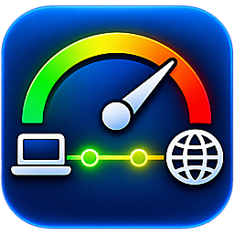

Ping Watch
Traces the route to your targets, shows each hop's latency and loss, and keeps the history. For Windows.
There is no release to download yet. The source code is on GitHub.

Traces the route to your targets, shows each hop's latency and loss, and keeps the history. For Windows.
There is no release to download yet. The source code is on GitHub.